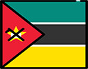
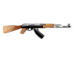

Moçambique, oficialmente designado como República de Moçambique, é um país localizado no sudeste do continente Africano, banhado pelo oceano Índico a leste e que faz fronteira com a Tanzânia ao norte; Maláui e Zâmbia a noroeste; Zimbábue a oeste e Essuatíni e África do Sul a sudeste.
O nome Moçambique, primeiramente utilizado para a ilha de Moçambique, primeira capital da colónia, teria derivado do nome de um comerciante árabe que ali viveu, Musa al Bik, Mossa Al Bique ou Ben Mussa Mbiki

Os primeiros povos que habitaram o território do actual Moçambique eram bosquímanos caçadores e recolectores. Entre o primeiro e o século V, ondas migratórios de povos de línguas bantas vieram de regiões do oeste e do norte de África através do vale do rio Zambeze e depois, gradualmente, seguiram para o planalto e áreas costeiras do país. Esses povos estabeleceram comunidades ou sociedades agrícolas baseadas na criação de gado.

Desde cerca de 1500, os postos e fortalezas comerciais portuguesas acabaram com a hegemonia comercial e militar árabe na região, tornando-se portas regulares da nova rota marítima europeia para o oriente, A viagrm de Vasco da Gama em torno do Cabo da Boa Esperança em 1498 marcou a entrada portuguesa no comércio, política e cultura da região.

Com ideologias comunistas e anticoloniais espalhando-se por toda a África, muitos movimentos políticos clandestinos foram estabelecidos em favor da independência de Moçambique. Estes movimentos afirmavam que as políticas e planos de desenvolvimento elaboradas pelas autoridades do governo eram voltadas apenas para o benefício da população portuguesa que vivia em Moçambique, sendo que pouca atenção era dada à integração das tribos moçambicanas e ao desenvolvimento das comunidades nativas.